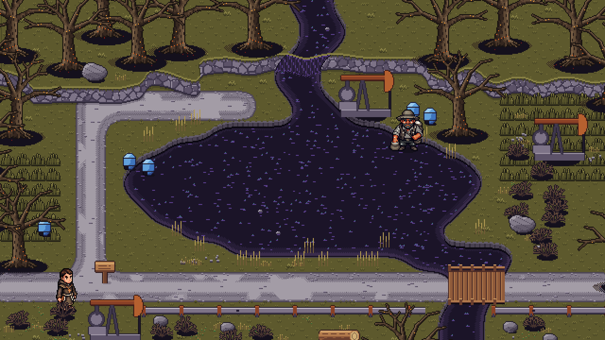
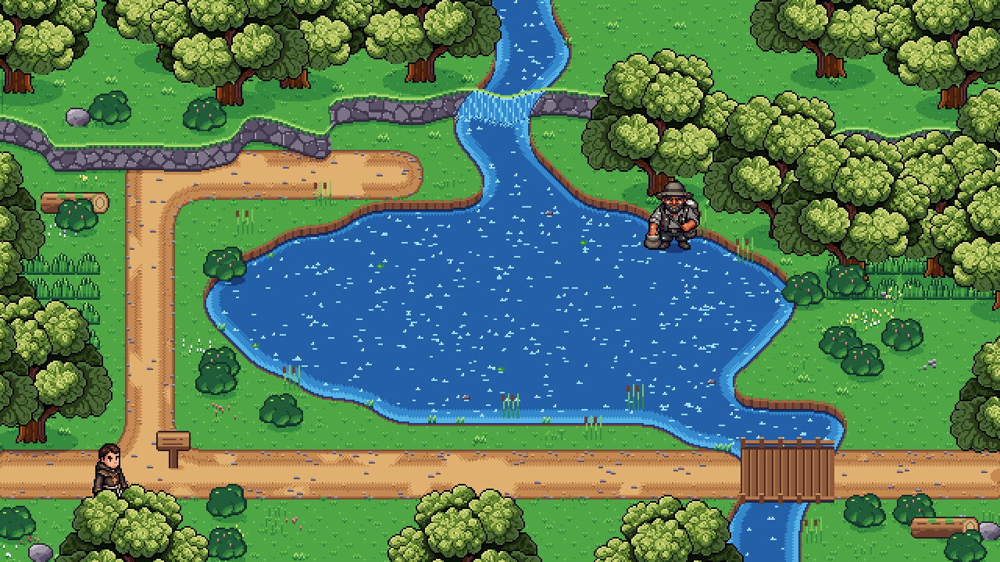
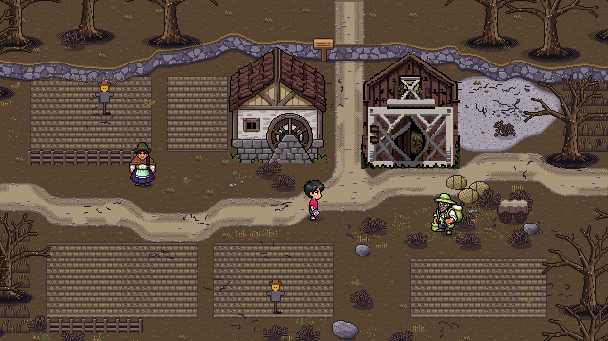
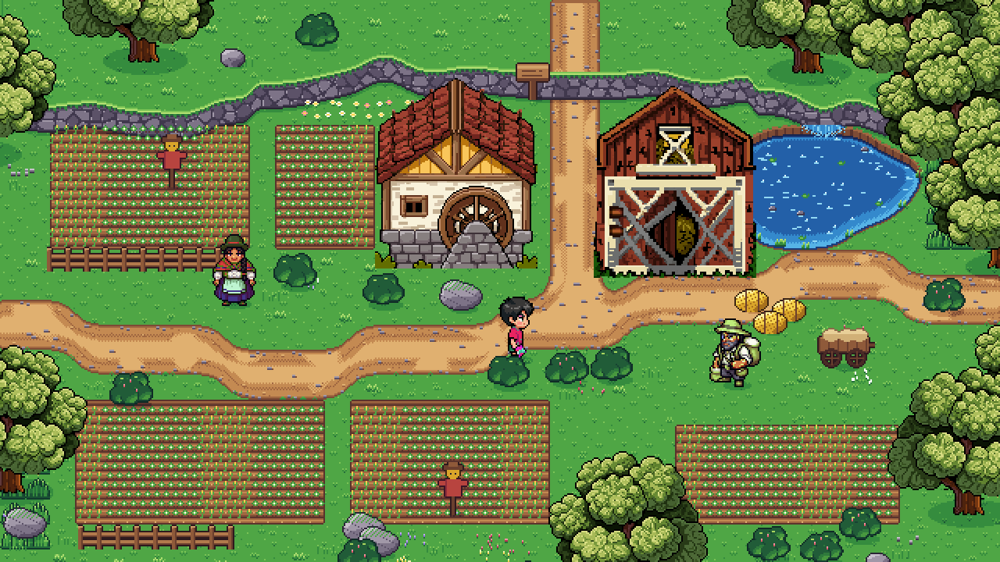
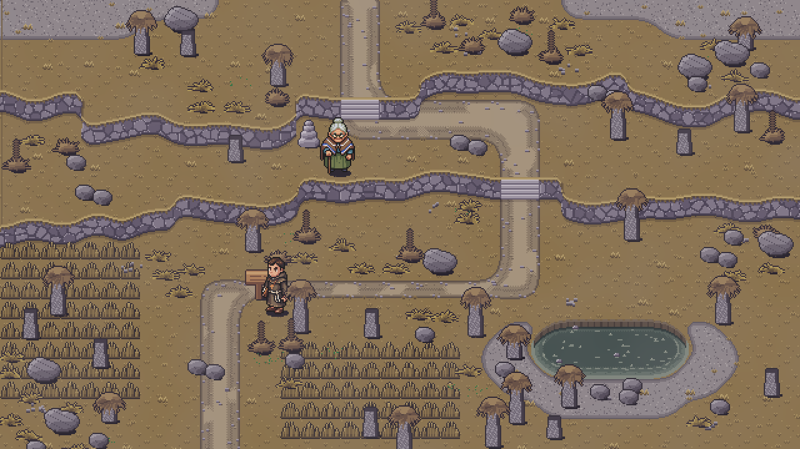
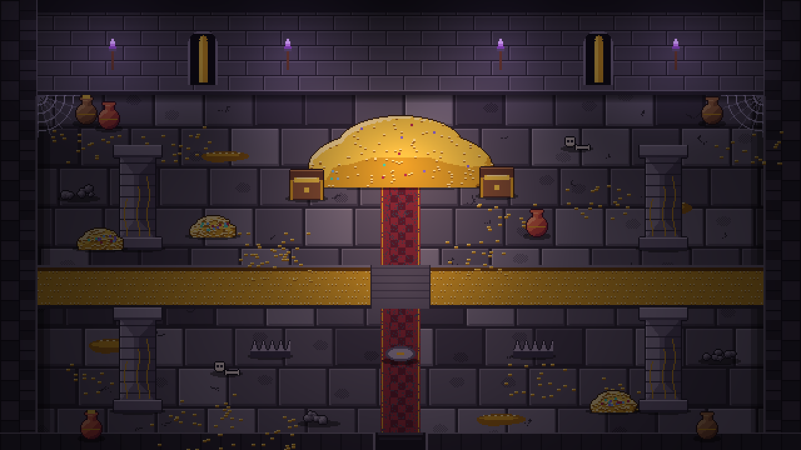
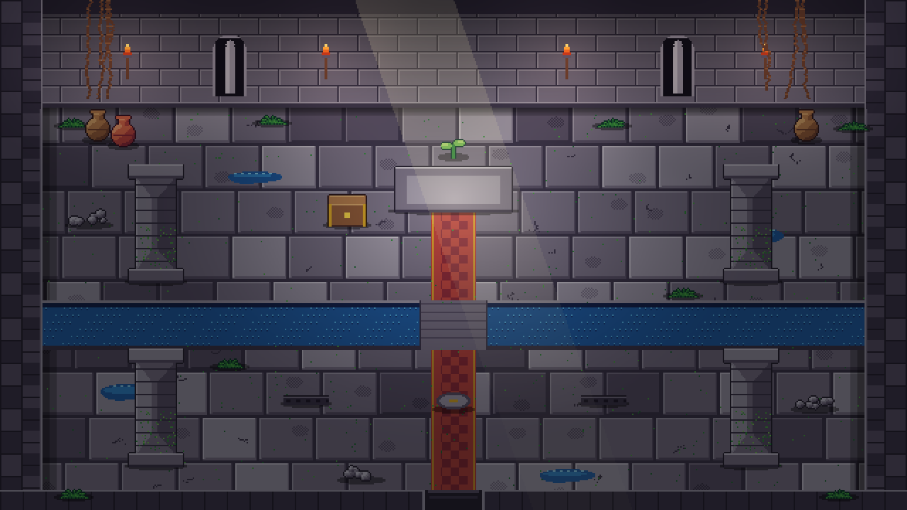

Costa Quebrada: playa, palafito y manglar (enferma / sana)


Cuenca de Alquitrán: ciénaga, balancines y tubería


Llanura Marchita: parcelas, molino de agua y granero


Cumbre Menguante: páramo, frailejones y glaciar


Cripta de la Avaricia: sala del tesoro

